Studio: Bodies
Ever had a soldier's feet skate across the floor, or a hand pop off the gun halfway through a reload, and had to start
the whole game just to see it again? That's what Bodies mode is for. It puts a body type (an animation graph in
content/anim) on a model of its rig (content/characters) and plays the rig's clips the same way the game blends
them. You drive it with the graph's own parameters, so you can check a blend, a pop or a foot sliding in seconds.
It's also where the body's data gets edited: the graph itself (its nodes on a canvas), the rig (content/rigs), the
footstep events on each clip, the shapes shots actually hit, and the reloads' steps (content/defs/reloads.json).
Everything except the Reloads tab saves with Ctrl+S and undoes with Ctrl+Z, like the rest of Studio. The preview's
sliders are never saved. They're just for looking!
How to open it
Click Bodies on the mode bar at the top, or start Studio straight in it:
dotnet run --project src/LastFleet.Studio -- --mode bodies
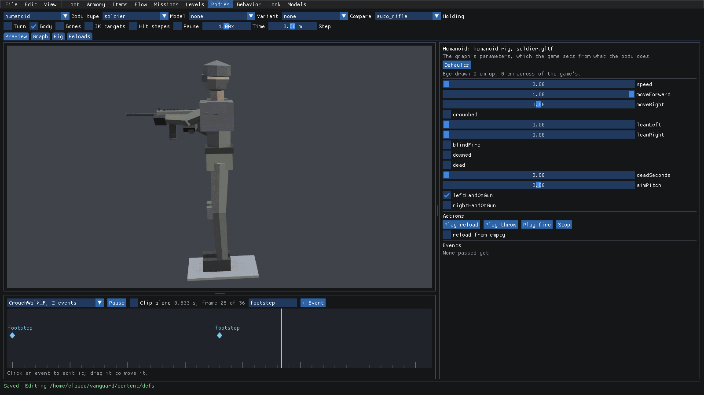
Here's the tour:
- The bar along the top picks what you're looking at. From left to right: the Body type (
humanoid), the Model it's drawn as (soldier), an enemy Variant, a model to Compare it with, and the gun it's Holding (auto_rifle). The row under it has the view's toggles: Turn, Body, Bones, IK targets, Hit shapes, Pause, Time and Step. - The tabs: Preview (what you see here), Graph, Rig and Reloads.
- The turntable in the middle, with the clip timeline under it.
- The parameters on the right: every parameter the graph declares, as a slider or a checkbox, then the graph's Actions, then the Events the clips have passed (footsteps).
Check a run on the turntable
So you want to know whether the run blend looks right? In the game, the client sets the graph's parameters from what the body is doing. Here, you set them.
- Double-click the speed slider on the right, type
4.5and press Enter. The soldier breaks into a run, and the Events list starts filling up withfootstep (Run_F, 1.00)as each foot lands.
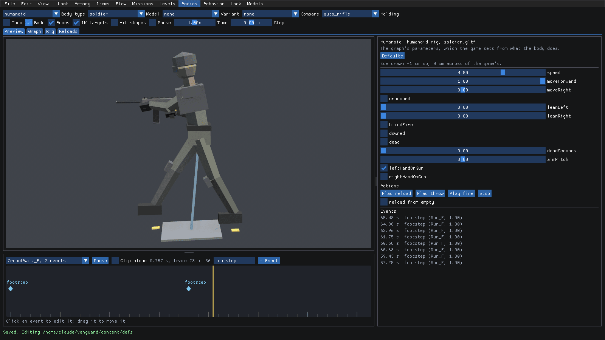
- Tick Bones and IK targets on the second row, and untick Body to hide the mesh. Now you see the skeleton itself. Bones in an IK chain are orange, and the yellow marks are what the IK reaches for: the floor under each foot. If a foot slides, this is where you'll see it.
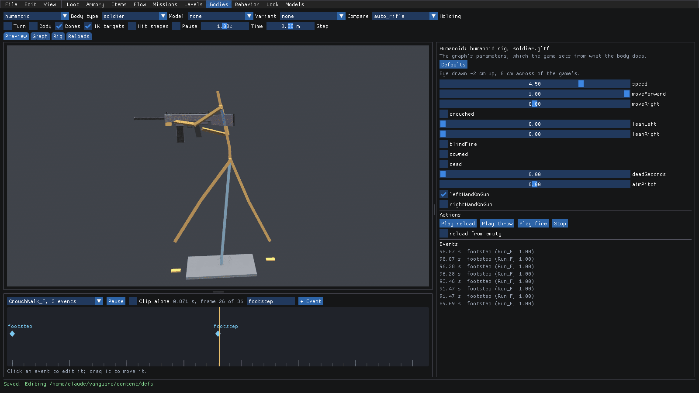
Try the other sliders while you're here (hover over one to see what it means). Defaults puts every slider back. None of this is saved, so go nuts!
Move a footstep on the clip timeline
Footsteps (and any other sound or effect a body makes as it moves) are events on the graph's clips. If a step sound plays a frame before the foot actually hits the floor, here's the flow:
- Pick the clip in the box above the timeline. Here it's
Run_F, 2 events. The timeline shows its frames, the playhead, and each event as a diamond. - Tick Clip alone. The body now poses in just that clip at the playhead (no blending, no IK), so you can see exactly where the event falls.
- Click the second footstep diamond. The body jumps to it, and the row under the timeline shows what the event
does: the Sound it plays (
step), its gain, the Effect it shows (dust) and At, where on the body it happens (the feet).
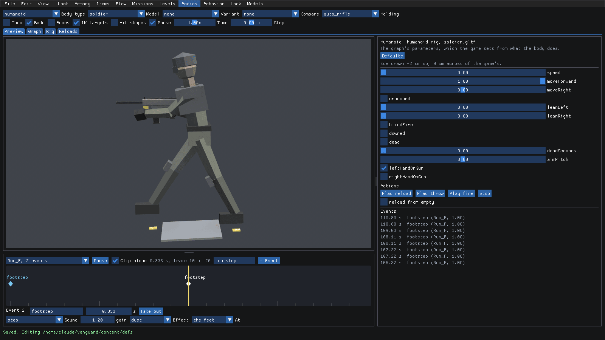
- Drag the diamond to the right. It snaps to frames (the clips are keyed at 30 a second), so here it lands on frame
11, at 0.367 s. The status bar now says
1 file not saved (Ctrl+S): humanoid.json, because events belong to the graph.
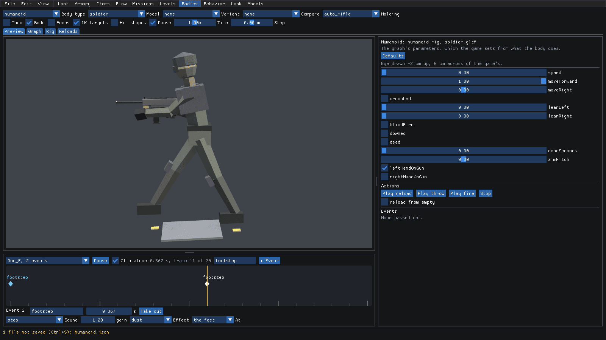
Happy with it? Ctrl+S keeps it. Changed your mind? Ctrl+Z puts it back (the status bar says Undid a change to humanoid.json). Adding and removing events is covered in the
reference.
Find your way around the graph
The Graph tab is the body's animation graph, wired up like Unreal's anim graph. Poses flow left to right into the Output Pose, which is what the body is drawn in.
- Click the Graph tab. On the left is the canvas, with the Output Pose fed by a Select between dead, downed and alive. On the right, the body plays the graph with the parameters under Try it, and under that is the selected node. Here it's the Select, with its three states, tried in order.
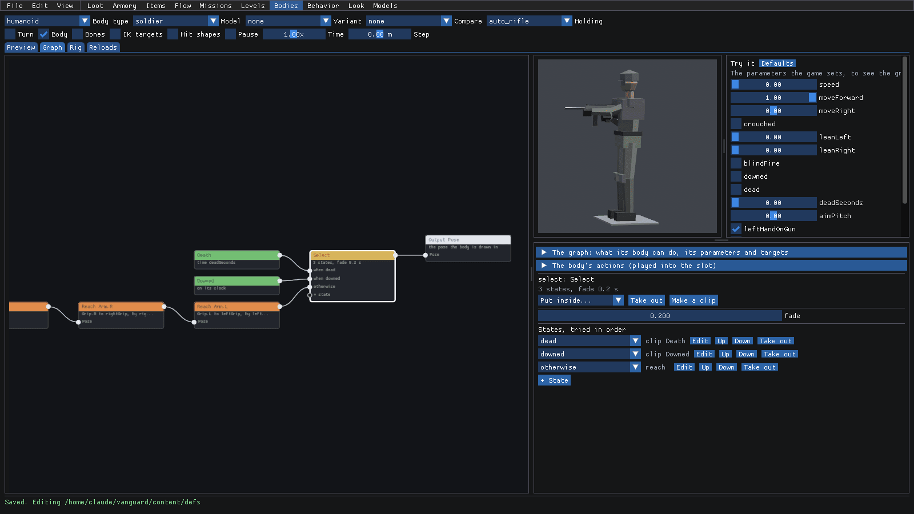
- Use the mouse wheel on the canvas to zoom, and follow the chain leftwards. Hover over a node to read what it does.
- Click the Reach Arm.L node. That's the IK that puts the left hand on the gun's fore grip. Its fields show up on
the right: the Chain (
Arm.L), the Target (leftGrip), the Socket (Grip.L), its Weight (theleftHandOnGunparameter), and its fade and swing.
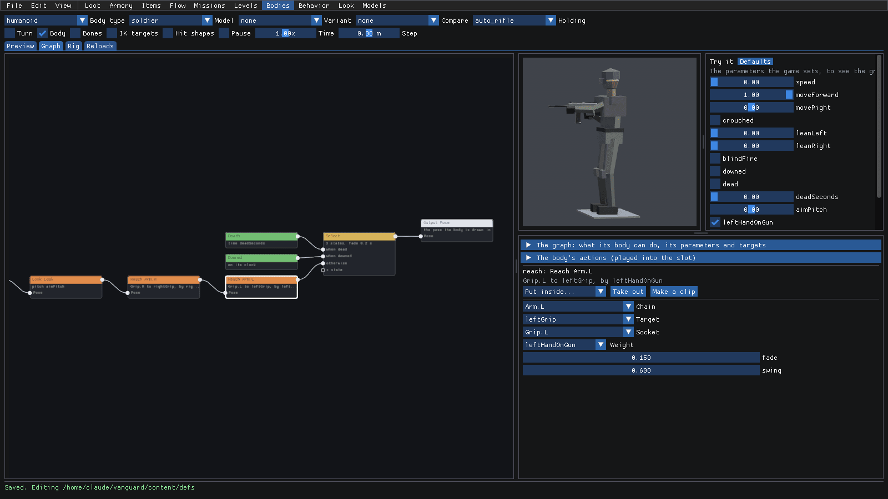
- Open The body's actions (played into the slot), then actions, then throw. Each action has its game
name, the rig clip it plays, the mask it covers (
upperBody), its fadeIn and fadeOut, and its events.
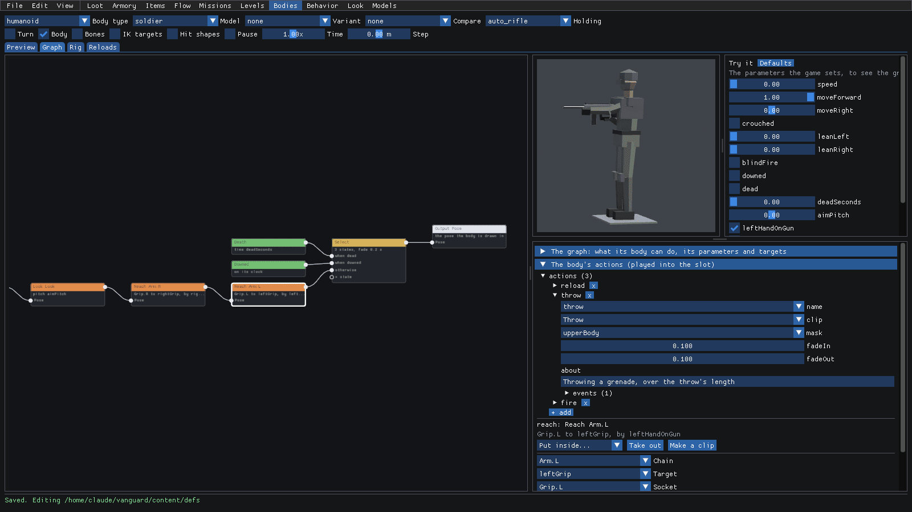
- Drag fadeIn to the right to make the throw ease in slower. Here it went from 0.100 to 0.315, and the status bar
flags
humanoid.jsonas not saved.
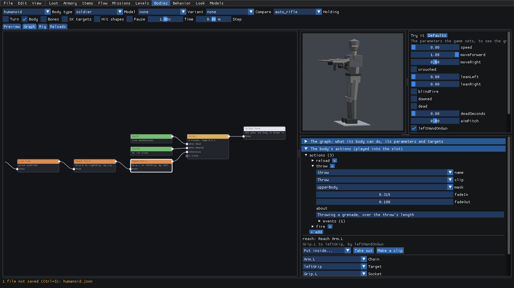
That's it! Ctrl+S to keep it, Ctrl+Z to undo it. Wiring nodes, wrapping one inside another and adding new ones are all covered in the graph editor reference.
Play a reload and tune its steps
A reload is two things: the reload action (the arms' clip, played into the slot), and the reload's steps (where the left hand and the magazine go, and when). Let's watch one, then tweak it.
- Back on Preview, tick Pause so it holds still, then click Play reload. A reload slider shows up under the actions.
- Drag the slider to about 0.39. The left hand has the magazine out and is holding it down by the hip.
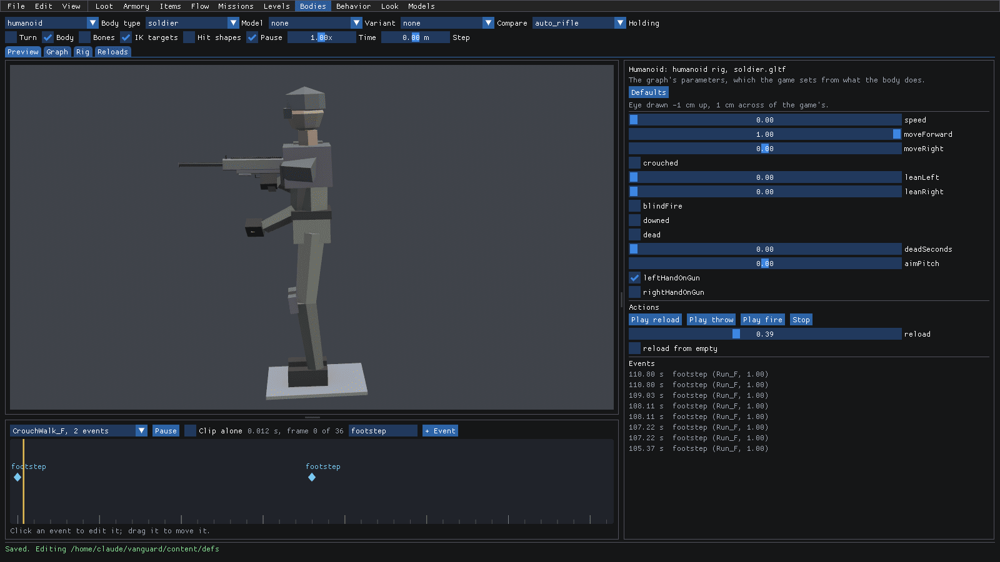
- Click the Reloads tab. Each reload is a table of steps for the frames it names (here
auto_rifle, pulse_rifle, smg, marksman_rifle, machine_gun). to is where the hand goes, until is the share of the reload that step ends at, magazine is where the magazine is meanwhile, and from empty marks a step only done after the last round (the charging handle).
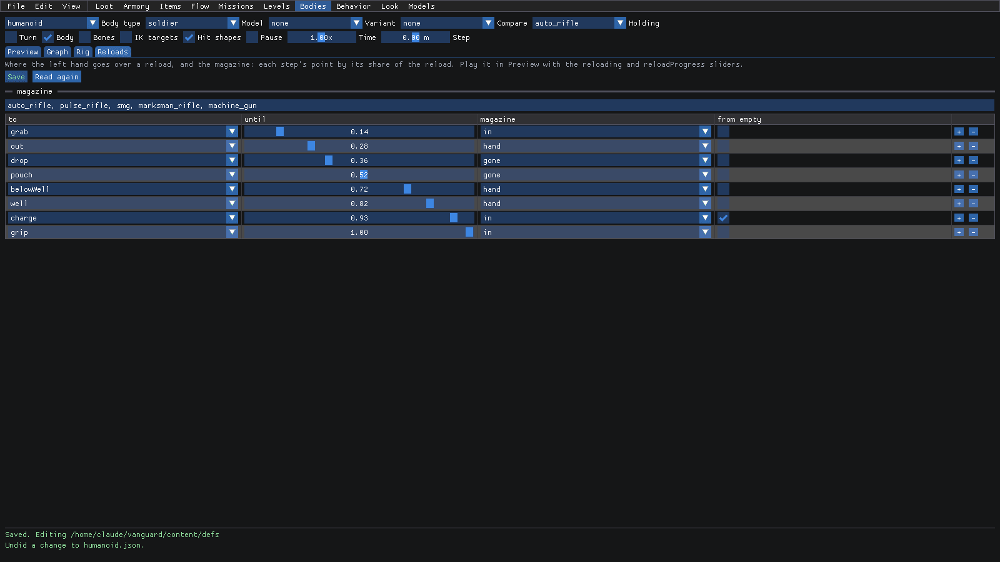
- Drag the pouch step's until from 0.52 to 0.56, so the hand lingers at the pouch a little longer. Every change plays right away on the Preview tab's body.
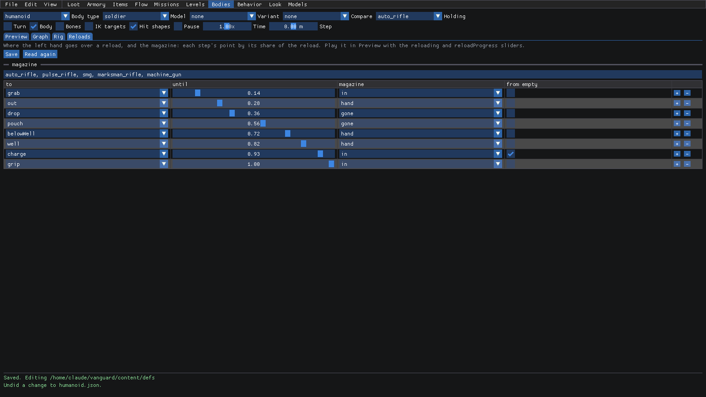
One gotcha though: this tab isn't part of Ctrl+S or Ctrl+Z. It has its own Save to write reloads.json, and
Read again to throw your changes away and read the file back in.
Fit the shapes shots hit
Shots never hit the mesh. They hit the simulation's shapes: a head sphere around the eye and a body capsule under
it. Those come from the humanoid rig's body, so if a helmet sticks out past the head sphere, this is where you fix it.
- Click the Rig tab. It's the rig file next to its skeleton: the bones (orange where they're in an IK chain), the
sockets and eyes in yellow, and the shapes shots hit in red, standing and crouched side by side. The rig's numbers
are under body:
headRadius,headAbove,crouchHeadAboveandhitRadiusare the ones for the shapes.
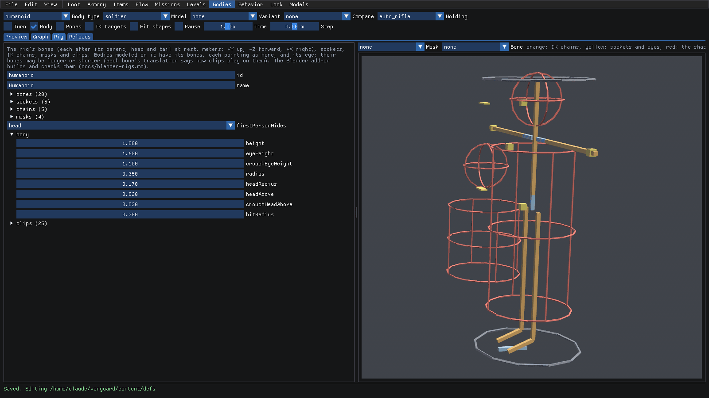
- Pick
upperBodyin the first box over the skeleton (Mask). Its bones turn green, so you can see what a mask covers before an action uses it.
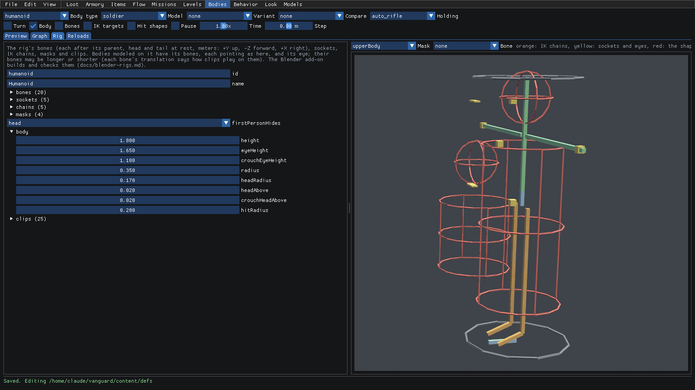
- Drag headRadius to the right. Both head spheres grow as you drag (here to 0.270, which is way too big, but it shows up nicely).
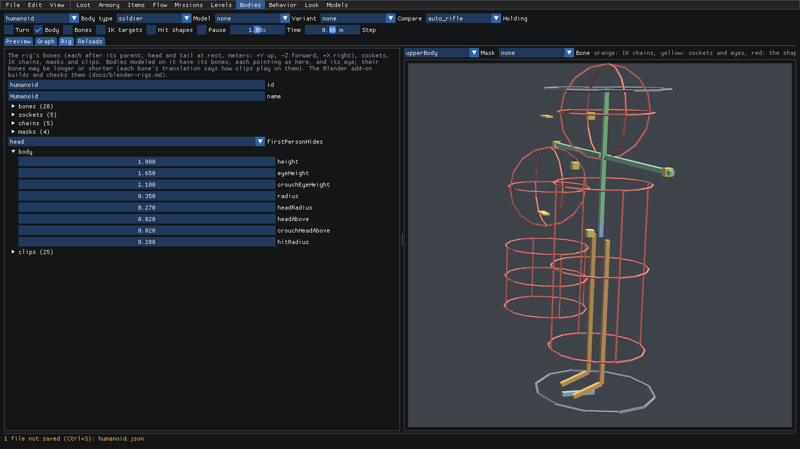
- Ctrl+Z that, and let's do it the hands-on way. Go back to Preview and tick Hit shapes. The shapes are drawn over the playing body, the eye from the animation is a cyan ring, and the game's eye is an orange diamond. Under the parameters, Hit shapes has the same numbers as sliders.
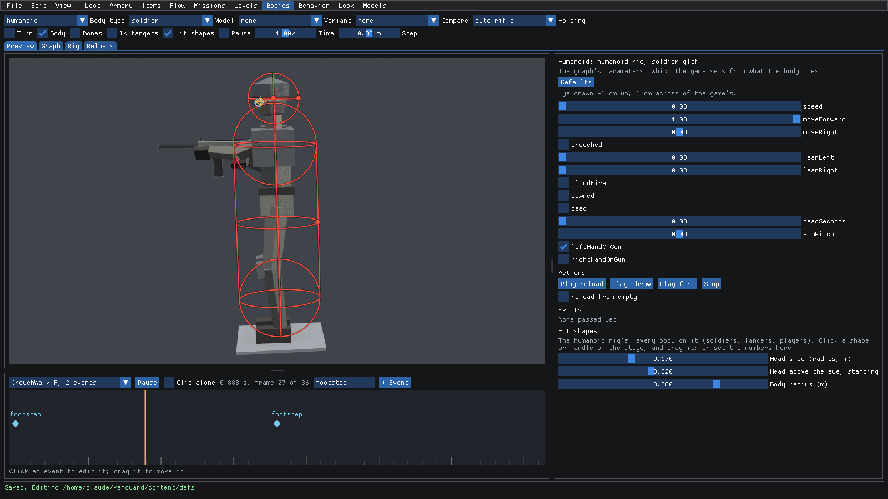
- Hover over the dot on the head sphere's edge. It turns orange and tells you to drag it in or out. Drag it out a
little: the sphere grows, Head size turns red as the selected number (0.215 here), and
humanoid.jsonis flagged as not saved.
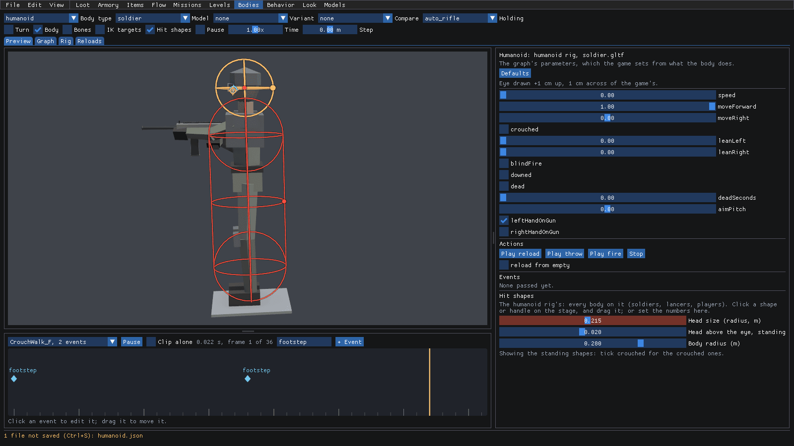
Every change goes into the rig, so it applies to every humanoid (soldiers, lancers and players), and Studio's sandbox shoots at the new shape right away. Ctrl+S keeps it, Ctrl+Z undoes it. Heads up: the shapes are for the size of the head and helmet. If the drawn eye and the game's eye drift apart (Eye drawn ... cm up at the top of the parameters), fix the clip, not the shapes!
Compare models and enemy variants
Does a clip still look right on a lankier body? Put them side by side.
- Open the Compare box on the bar and pick
lancer. The lancer stands next to the soldier, playing the same graph with the same sliders and the same gun. Each keeps its own build, so you see the clip on both bodies at once. Here both are crouched.
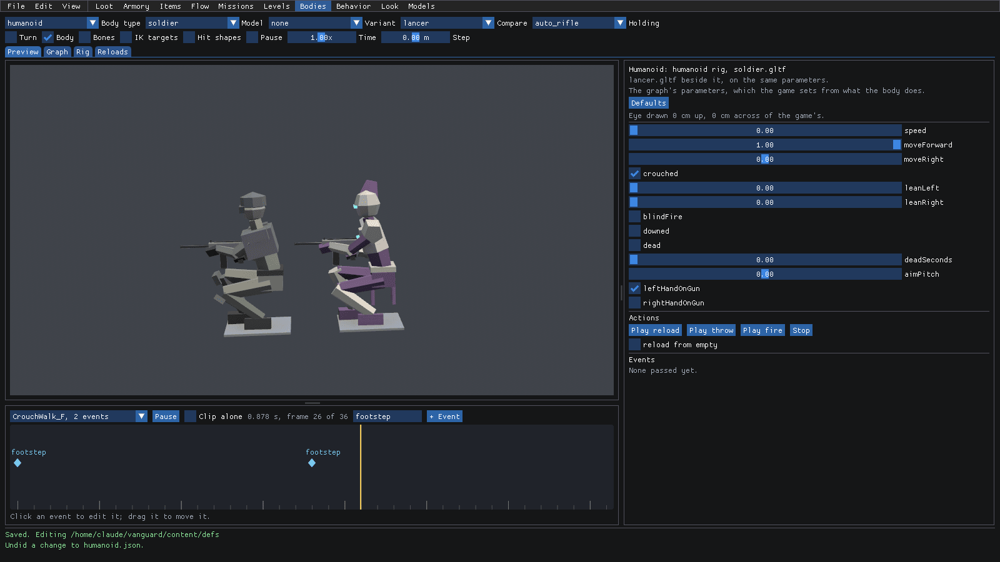
- Set Compare back to
none, then open Variant and picklancer. Now the body is the enemy variant itself: its model, playing its own clips (from Behavior > Enemies) in place of the body's. The model box switches tolanceralong with it, and the header on the right sayslancer.gltf.
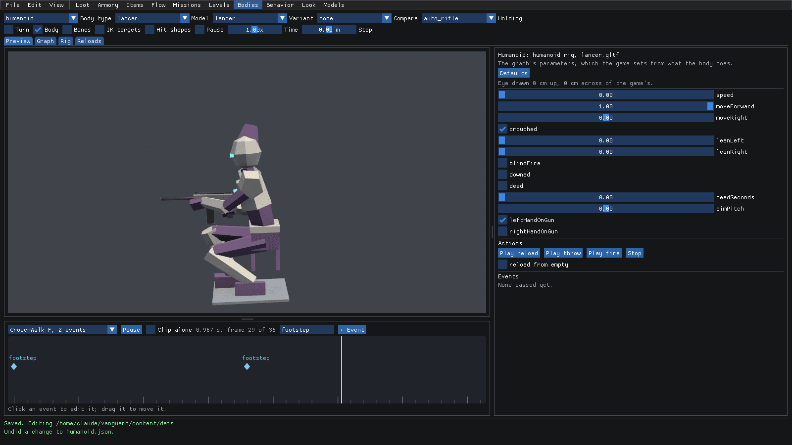
These are just for looking, so there's nothing to save. To change what a variant is drawn as, or which clips it swaps, head to the Enemies tab in Behavior mode.
Where to next
- The full reference for this mode is Bodies: animation on a turntable, the graph and the rig, with the graph editor, the rig editor, Reloads and fitting the shapes shots hit.
- How the graph's nodes work is in animation-graphs.md.
- The enemy variants and the behaviors they think with are in behavior.md.